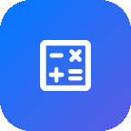
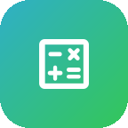
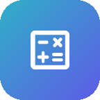
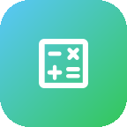
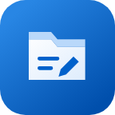
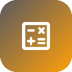
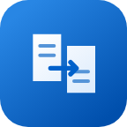
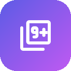

锦盒 / 工具目录
需要的那一件，
就在这里。
297 件工具，9 个门类。搜一个名字，或从熟悉的类别翻起。
目录对应已发布版本 1.8.62 · 全部 297 件工具共 297 件工具
名称与说明均可搜索- 效率
工作台
各工具的产出先放到这张台面上(文字/图片/音频/文件),复制、存下来,或者一键送进另一个工具的输入框
- 文本
文本统计
字符、汉字、行数与段落,还能排出出现最多的词
- 文本
文本转换
大小写/简繁/全半角/反转,以及 HTML、\\u、字符串转义互转
- 文本
文本对比
两行级对比,高亮差异
- 文本
文本加密
Base64/MD5/SHA-1/SHA-256/SHA-512/AES,摘要可逐行
 文本
文本JSON 格式化
美化、压缩、校验 JSON
- 文本
摩斯电码
文字电码互转,可蜂鸣播放
- 文本
正则测试
匹配高亮与分组捕获,内置现成正则库与逐段讲解,调好能直接拿去替换
- 文本
拼音转换
汉字转拼音,带声调/首字母
- 文本
文本翻译
中英日韩等 38 种语言互译,本机跑,不联网
- 文本
Base64 转换
图片与 Base64 互转:出 data URI,也能把 base64 还原回图并存进相册
- 文本
命名风格
驼峰/下划线/常量互转,整列名字批量改名
 文本
文本行处理
去重去空行、排序编号、加前后缀、调缩进
- 文本
URL 编解码
网址转义还原,查询参数逐条拆解
- 图片
图片拼图
网格/长图拼图,可调间距与底色
- 图片
二维码生成
文本/网址生成二维码,可保存分享
- 图片
图片压缩
调质量/尺寸,压出小体积图片
- 图片
格式互换
PNG / JPEG / WebP 互转
- 图片
九宫格切图
把一张图切成九宫格打包
- 图片
表情包制作
图片配上文字,秒变表情包
- 图片
颜色工具
调色板 + 图片取色(放大镜),HEX/RGB/HSV/CMYK 互转
- 图片
对比度检查
WCAG 对比度是否达标,并给出该改成什么色
- 图片
抠图
为人像、商品和卡通去除背景，导出透明图片
- 图片
GIF 合成
多张图片合成 GIF,帧序/延时/循环可调
- 联网
图片转链接
多选上传免注册图床,批量出直链
- 图片
图片识字
本机识别图片里的文字,竖排、中英混排都认
- 图片
批量识字
一次多张图,识别后合成一份文本
- 图片
图中找字
在图片的文字里找词,命中处圈出来
- 图片
取字朗读
把图里的字念出来,语速可调
- 图片
单据提取
从票据里挑出日期、金额、单号、电话
- 计算
周岁计算
周岁、虚岁、生肖、星座、生日倒计时
- 计算
农历转换
公历农历互转,干支生肖
- 计算
单位换算
长度/重量/温度/面积互算
- 计算
日期计算
日期相差几天、推算前后日期
- 计算
BMI 计算
身体质量指数与健康体重范围
- 计算
时间戳
时间戳与日期互转
- 计算
进制转换
二/八/十/十六进制互转,还能做 Base32、Base58 与文本互转

计算百分比
占比、涨跌、加成、反推总数,一次全出
- 计算
折扣税费
打折满减、加税加小费、多人 AA 一人多少
- 计算
复利定投
定投复利逐年明细,还能反推所需利率/年限/本金
- 计算
工作日计算
含法定节假日与调休:区间有几个工作日,几个工作日后是哪天
 效率
效率倒计时秒表
倒计时与秒表计次
 效率
效率待办清单
简单好用的本地待办
- 效率
习惯打卡
每日打卡,看连续天数
- 效率
提词器
台词匀速滚动,支持镜像
- 效率
全屏时钟
大屏数字时钟,桌面摆件
- 效率
文字转语音
把文字读出来
- 效率
PDF 工具
图片转 PDF、PDF 转图片、合并 PDF
- 效率
随机 ID
UUID / 时间有序 ID / 短 ID 批量生成
- 效率
朗读时长
中英文分别计时长,按语速与千字价估报价
- 媒体
音乐可视化
频谱/波形实时律动,可导出带声视频
- 媒体
格式阅览
预览文档、电子书和压缩包
- 效率
文本传输
同一 WiFi 下与电脑/另一台手机互发文字、文件
- 媒体
录音机
一键录音,回放分享
- 媒体
分贝仪
测测周围有多吵
- 联网
封面提取
B站/抖音/快手/小红书,粘贴分享文本抓封面
- 媒体
视频转 GIF
截取视频片段转成 GIF 动图
- 媒体
音色克隆朗读
录一段自己的声音,以后让它替你念稿子
- 媒体
语音转文字
对着手机说话,字跟着出来;全在本机跑
- 生活
随机工具
随机取一个整数,或者抛硬币
- 生活
指南针
户外辨方向
- 生活
水平仪
挂画贴东西找平
- 生活
屏幕尺子
把屏幕变成尺子
- 生活
密码生成
生成高强度随机密码,也能体检手边已有的密码
- 生活
海拔高度
GPS 海拔 + 气压海拔对照,附粗略位置
- 生活
证件校验
身份证/银行卡/信用代码的校验位对不对
- 生活
分组器
名单随机分组,组数人数自定,能发群里
- 娱乐
手持弹幕
全屏滚动大字,应援/传话神器
- 娱乐
转盘决定
做决定、抽签、点名都在这:写几行选项转起来,停在哪个就是哪个;可存方案、可不放回、也可直接出结果
- 学习
工具开发
制作与导入工具的接口和包格式
- 学习
工具打包
选择工具文件，校验后打包安装
- 文本
表格互转
CSV/TSV 与 JSON、Markdown 表格互转,先预览再转
- 文本
JWT 解析
拆头部载荷、逐条讲声明、算过期,还能本地验签
- 文本
SQL 美化
按词法排版/压缩 SQL,顺带体检表名与参数
- 效率
HTTP 报文
整段头部粘进来:逐个讲含义、拆 Cookie、出 curl
- 效率
cron 表达式
翻译成中文,并算出接下来 5 次什么时候跑
- 图片
图片信息
拍摄参数、拍摄地点、明暗分布与曝光诊断、主色占比,本机全读出来
- 图片
CSS 样式
调渐变/阴影/毛玻璃,直接出能粘进样式表的 CSS 代码
- 图片
色盲模拟
八种色觉缺陷逐像素模拟,还能出对照图
- 图片
马赛克打码
拖框遮住手机号身份证号,马赛克或涂抹模糊,全靠本机
- 图片
批量改名
一次几十张图:出尺寸清单,按规则改名打包导出
- 生活
传感器仪表盘
四路传感器实时读数与峰值,附本机传感器验机清单
- 生活
用药间隔
上次服药加间隔,算出下次最早可服并排一天时刻表,可设提醒
- 效率
会议时间换算
跨时区约会议:对方当地几点、会不会半夜,并推荐合适时刻
- 学习
周数校历
今天第几周、第 N 周是几号、学期第几教学周,可导出周次表
- 生活
震动模式
自己拼一条震动节奏,调振幅与循环,试完能复制带走
- 生活
求救信号
屏幕或相机闪光灯按国际求救码爆闪并同步震动;用闪光灯才要相机权限
- 图片
超级放大
放大 2~4 倍,Lanczos 重采样 + 只锐化边缘,线条干净不糊边
- 图片
照片去雾
暗通道先验去雾:把灰蒙蒙的画面层次与颜色提回来
- 图片
黑白影调
黑白滤镜、整体色调、单色调,选一张预设就出图
- 图片
几何校正
镜头畸变、四角透视、比例还原,把变形的图拉回来
- 图片
图像对比
两张图并排、交替、叠加、差异,并给出逐像素差异统计
- 图片
色阶曲线
直方图上调色阶与曲线,自动色阶一键可用
- 图片
抹掉水印
框住水印时间戳,扩散或块贴合补回来,本机完成不上传
- 生活
电池体检
电压电流温度、循环次数、按段记录的充放电曲线,零权限
- 效率
存储分析
谁占了地方:目录占用排行、大文件、卷容量,读不到时说明原因
- 联网
网络诊断
ping 网关与外网、域名解析耗时、端口可达性,给一句结论
- 生活
性能监视
实测帧率与屏幕刷新率、各核频率、内存、温度与负载
- 媒体
音频链路
声音从哪个设备出、连着哪些音频设备、五路音量与本底延迟
- 生活
传感器校准
陀螺仪零漂、重力合成、地磁模长、距离与光线,判标定好坏
 效率
效率就近配对
扫出同 WiFi 下开着的锦盒,念一次六位码就配上,不用来回扫码
- 效率
批量快传
多文件一次传、断了从断处续,收件箱还能打包推给配过对的设备
- 效率
网页遥控
手机写稿电脑当大屏:翻页、字号、激光红点都在手机上按
- 计算
节气提醒
下一个节气倒计时、全年节气表与三伏数九,可设到点提醒
- 效率
议程计时
会议议程分段倒计时,段末震动、超时追踪,散会出执行报告
- 效率
排练节奏
按字数给稿子配速,逐段打点,复盘真实语速与节奏
- 文本
中文排版体检
全角半角、中英加空格、标点成对、引号书名号:先体检再修
- 文本
乱码修复
猜编码、救乱码,说清凭什么这么判,救不回来的明说
- 文本
批量替换
一叠规则一次跑完,每条命中几处白纸黑字,贴前还能打码
- 文本
长文分章
几十万字按章切好:先数标题样式,再出目录与逐章 zip
- 文本
脚注整理
引注对账,并按正文出现顺序重排编号,两边同步改
- 学习
字帖生成
田字格/米字格描红字帖,带规范笔顺与拼音,导出 A4 大图
- 图片
字符画
图片或文字变成一片字符,可复制、存 txt、打成图片
 效率
效率验证码生成
本机画图形验证码:干扰线、噪点、扭曲可调,能批量出图与答案清单
- 学习
错题本
错题拍下来取字,补上答案与错因,按遗忘曲线到期来找你
- 学习
单词卡
自己的词卡 + 遗忘曲线排期,还能整段粘词表批量导入

学习公式速查
数理化生公式带符号说明,标了「可算」的还能代入求未知量
- 学习
大事年表
中国朝代、中外同期对照、地理之最,一张离线年表看全
- 学习
诗词库
公有领域诗词按朝代分好,背诵检查能挖空判分
- 学习
读书摘录
书目进度 + 摘录 + 想法,旧摘录按期回来找你,可导出 Markdown
- 学习
考试倒计时
剩几天,以及今天该给各科多少分钟、每天要提几分
- 联网
天气
实况+12 小时+7 天+空气一次看完;定位权限用时才申请,拒绝也能手输城市
- 联网
快递查询
单号识别不联网也能用,轨迹一次粘一叠一起查,查完能整段发给家里人
 联网
联网行情
自选股一屏看完,附金银行情与克价换算;行情有延迟,仅供参考
- 联网
地震速报
全球地震按离你多远排;浏览器只按震级排,这里才知道跟自己有没有关系
- 联网
网页源码
把一个网址抓回来:源码、正文、链接、脚本、表单一次摊开,GKB 站点也不乱码
- 联网
请求测试
自己发一次请求:换方法、加头、看状态码与跳转链,手机上不装开发者工具也能打接口
- 联网
热榜聚合
百度/微博/头条/B站/豆瓣/GitHub 六个站点的 23 个榜单,一个页面切着看
- 联网
手机归属地
运营商离线就判得出(含虚拟号段),省市再联网补;号码不落盘
- 联网
IP 查询
本机内网地址离线读,公网 IP 与指定 IP 的归属联网查,可一键复制
- 联网
彩票开奖
双色球/3D/七乐彩/快乐8 与 大乐透/排列3/七星彩,取官方接口
 联网
联网近反义词
一个词的拼音/释义/近义词/反义词一次全出,近义词可点着接着查
 生活
生活邮编查询
全国 2874 个区县的邮编全离线:按邮编查地方,也能按地名反查邮编
- 生活
垃圾分类
规则全离线:按你所在城市换算叫法,并说清是按哪个关键词判的
- 学习
成语词典
30895 条成语全离线:查字、查拼音首字母、按释义找都行,带出处例句
- 联网
历史上的今天
某月某日历史上发生过什么:维基百科的精选与全部两档,结果按天缓存,离网也能看上次那份
- 学习
汉语字典
7 万汉字 + 26 万词语全离线:读音(多音字全列)、部首、笔画、释义、例句、组词,拼音/部首/码位都能查
- 学习
多语词典
20 本离线词典:英语 77 万条,汉英、日汉、日语、法语、德语、西班牙语、俄语等 16 本双语 + 4 本汉语辞典,可导入自己的词典
- 生活
洗衣标签
衣服上那排洗涤符号看得懂:33 个符号按几何图形画出来 + 常见面料护理要点,全离线
- 生活
保质期台账
家里的药与食品整成台账,按剩余天数排;包装保质期与开封后期限取更早的那个,可设到点提醒
- 生活
宠物年龄
猫狗年龄换算成人岁(狗还分体型)+ 按 RER/DER 算每天吃几克、喝多少水
- 生活
轮胎规格
205/55R16 91V 逐项解读,换胎尺寸差多少、速度表偏多少、承重够不够,画剖面一起看
- 生活
全球电压插头
出境用电:各国电压/频率/插座型式(插头针脚画出来)+「我这个电器能不能用」三步判断
- 生活
咖啡因代谢
记一杯咖啡/茶/可乐,按半衰期算此刻体内残留与睡前剩多少,画衰减曲线
- 计算
菜谱分量
4 人份改 6 人份整段缩配料(认 1/2 杯这种分数)+ 杯勺克密度换算 + 烤箱温度对照

计算数据统计
粘一列数字:均值/中位数/标准差/四分位/直方图;两列还能算最小二乘回归与 R²
 图片
图片证件照排版
16 种证件尺寸按 300dpi 拼到相纸:几列几行、几张、留多少白,出图直接去冲印
- 图片
扫码
识别相机、相册与工作台图片中的二维码和条形码
- 媒体
调音器
麦克风听音报音名与音分偏差(自相关算法),A4 可校 415~445,带定弦参考
- 媒体
和弦指法
12 根音 × 15 种和弦:组成音、钢琴键位、吉他把位(E 型/A 型模子推算)、可试听
- 学习
方程式配平
化学方程式配平(线性方程组精确求解)+ 逐元素核对 + 相对分子质量,含 15 个常见式子
- 学习
词根词缀
150 条英语词根词缀速查(能按中文义反查),还能拆一个长单词看它由什么拼起来
- 学习
文言虚词
30 个常见文言虚词、111 个义项,每义项配例句、出处与今译;搜义项与出处的字也能查到
 生活
生活血压记录
按指南分类表判读每一笔:家庭达标率、平均值、晨晚差,连趋势图一起,全在本机
- 生活
经期记录
记开始日与结束日,算平均周期、波动与下次预计(含排卵估算,不用于避孕)
- 生活
班表轮值
倒班表自己排:做几休几轮着来,某天是什么班、这个月几个夜班一眼看清
- 生活
装修用量
房间尺寸算用料:瓷砖块数、地板包数、乳胶漆升数、壁纸卷数、踢脚线米数(含损耗)
- 生活
鱼缸水量
缸体积与实际水量(已扣底砂与留边)、加热棒功率、过滤流量、换水量与盐浴用盐
- 计算
运动心率
最大心率与五档靶心率:心率储备法或最大心率百分比,两种口径都摆出来
- 计算
跑步配速
配速/时速/完赛时间互换,按 ACSM 方程折算坡度,并估算这一段消耗多少千卡
- 计算
分期实际利率
「每期 0.6%」到底是几个点:解现金流 IRR,名义年化与实际年化一起摆出来
- 计算
加班工资
按 21.75 天折日工资与时工资,平日 1.5、休息日 2、法定 3 倍一次算清
- 计算
发票税点
含税↔不含税、税额、现行税率速查,以及「加几个点开票划不划算」的进项账
 计算
计算单价比价
不同规格折算成每 100 克/每 100 毫升/每个的单价,谁划算一眼看得出来
- 计算
时长累加
一列时长求和、时刻加时长、两个时刻之间隔多久(可扣午休),跨天会写明
- 图片
圆角头像
超椭圆/圆形/圆角矩形裁剪加描边,出透明底 PNG,头像放深色背景不缺角
- 媒体
移调换算
整段和弦移调、变调夹夹在第几品、调内级数与和弦互查,歌词不会被改
 学习
学习化合价速查
常见化合价与原子团速查,还能从化学式推算出某元素的氧化数(变价会列全)
- 联网
DNS 查询
A/AAAA/MX/TXT/CAA/PTR 十种记录逐条查,可一键换阿里/腾讯两家 DNS 对比;附邮件域名体检
- 联网
证书检查
看一眼对方现在给的证书:谁签的、还剩几天到期、域名对不对、系统信不信;只握手,不发 HTTP 请求
- 联网
链接预检
别人发来的链接点之前先看清:短链展开成真实域名 + 本机的可疑特征判断(@ 伪装、明文、punycode)
- 联网
注册信息
域名什么时候注册的、什么时候到期、谁管的;IP 段归谁、ASN 是谁的(RDAP 标准接口,免密钥)
- 联网
气象预警
中央气象台正在生效的预警:按红橙黄蓝排好,按省市/类型/关键词在本机筛(免密钥的官方来源)
- 联网
时间校准
本机时钟比标准时间差几秒:问几个站点取中位数,并如实报出精度(秒级)与几个来源的离散度
 联网
联网在线翻译
中英日韩俄六种方向,长文按句子自动分段连译;免密钥公开接口,页面上写清它不是大模型
- 效率
子网计算
IPv4 子网:CIDR 拆成网络地址/掩码/可用范围,按新前缀切分,按要装几台反推前缀,纯算法不出网
- 效率
屏幕换算
px/dp/pt/毫米互算、设计稿到 dp、PPI 与点距、中文字号对照,六档密度全列出来
 效率
效率阵列容量
RAID 0/1/5/6/10/50/60 与 JBOD:可用容量、容错几块、写惩罚,附标称容量与能录多久
- 文本
列宽对齐
按**显示列宽**(汉字算 2、组合符算 0)算每行占几列,把不对齐的表排齐,按列截断不劈汉字
- 文本
相似行合并
名单/地址里的近似重复行(编辑距离)聚成一组给出相似度,可导出去重后的整片文本
- 文本
JSON 转模型
粘一段 JSON,出 Kotlin data class / TypeScript interface / Go struct,并列出字段表与推断口径
- 学习
电阻色环
四/五/六环电阻:色环画出来并读出阻值,给阻值也能查该刷哪几道环(含 E24 标称值)
 学习
学习因数分解
质因数分解、约数、素数判定、GCD 与 LCM;拆不动的大合数如实说拆不动,不编
- 学习
五十音图
清音/浊音/半浊音/拗音全表:平假名、片假名、罗马字、段位,还能按罗马字或假名查一个音
- 计算
日出日落
按日期与经纬度算日出、日落、昼长、民用晨昏与太阳正午;NOAA 公开算式,离网可用
 计算
计算套餐折算
按你自己的月用量,把几档「月租+含量+超出单价」算出月费并排出最省的那档(不含过期资费表)
 生活
生活动态口令
粘一串 Base32 密钥或 otpauth 链接,算出当前 6 位动态口令与剩余秒数;密钥只在内存,不落盘不联网
 生活
生活孕周预产期
末次月经首日 → 预产期(Naegele 规则)、当前孕周、剩余天数与孕期日历;只做日期算术
- 媒体
码率体积
码率↔体积↔时长互相推算、带宽耗时、未压缩原始体积、存储卡能录多久
- 图片
景深计算
按焦距/光圈/距离/画幅算景深前后界与超焦距,附 ND 滤镜减光后的快门时间
- 生活
充电宝容量
电芯 mAh 与额定容量的猫腻、能给手机充满几次、能不能带上飞机、自己充满要多久
 生活
生活空调选型
房间面积算要多少制冷量、选几匹、一小时耗多少电、一晚电费多少钱
- 生活
婴儿奶量
按体重算每天奶量、每次多少、要几勺粉,一罐能喝几天、一天多少奶粉钱
- 生活
证件有效期
身份证/护照/驾驶证:按签发日算有效期档位与到期日,以及什么时候能去换证
- 计算
配比稀释
1:10 要配一升该倒多少?手上只剩半瓶时能配多少?按份数配比,不是浓度换算
- 计算
提前还款
提前还一笔之后「缩短年限」与「减少月供」各省多少利息,两条路一次算清
- 计算
眼镜度数
框架度数换隐形度数(顶点距离 12mm)、度数↔屈光度↔焦距、散光等效球镜
- 效率
备份策略
每天全量/增量/差异三条备份路要多少空间、每天传多少、出事要几份文件,附 3-2-1 体检
- 效率
文件校验
选一个文件算出 MD5/SHA-1/SHA-256/SHA-512 与 CRC32,再和下载页给的摘要比一下;分块读,不吃内存
- 效率
硬盘寿命
TBW 与每天写入量算能用几年、保修期内每天允许写多少、DWPD 与剩余额度
- 文本
数字写法
一个数的中文小写/大写、罗马数字、英文与序数写法,也能写成人民币大写;中文与罗马数字还能读回数字
- 图片
批量二维码
一列文本排成一张可打印的标签纸:每格一个码加一行说明,带裁切线,能存相册
- 媒体
敲击测速
跟着歌点几下量出 BPM(取中位数抗手抖),也能按「数了多少拍用了几秒」直接算

学习有效数字
一个数有几位有效数字、修约到几位(含 GB/T 8170 五成双)、乘除加减该留几位
- 生活
板材开料
一张板能切出哪些件、要几张、利用率多少,排样图画出来;货架贪心,不是最优解
- 效率
设置
朗读走系统还是内置、界面字体、各族模型占了多少与怎么删,一处管完
- 效率
说一句找工具
说出你要干什么,它从几百个工具里挑一个;能带图的一起带过去
- 效率
记事本
随手写一条,停下来就自动存;全篇可搜、能分组,还能念出来或送去台面
- 文本
字体管家
- 媒体
录音转字幕
- 计算
AA 分摊
饭局旅行 AA 算账,不均分也抹零到角
- 娱乐
答案之书
默念你的问题,翻开一页答案
- 效率
APK.1 安装
QQ/微信收到的 .apk.1 安装包,直接安装
- 媒体
音频实验室
音频裁剪/变速/变调,导出 WAV
- 生活
银行卡BIN
卡号查发卡行与卡种，Luhn 算法校验卡号
- 图片
条形码生成
Code128/EAN/UPC 条码,可存 PNG
 娱乐
娱乐淘汰赛编排
种子或抽签编排、轮空晋级与赛果修订
- 生活
车牌归属地
查车牌代码归属地，也能按城市反查代码
- 图片
中国传统色
中国传统色谱:查色名色值、收藏颜色
- 学习
课程表
排每周课程表,12 节/天,可增删课
- 娱乐
手速测试
限时点击挑战,实时 CPS 曲线,测你的手速上限
- 效率
表格筛选
按条件筛选与排序表格，预览后导出完整结果
- 学习
每日英语
每天一句地道英语,365 天不重样
- 生活
倒数日
倒数与纪念日,带农历生日与桌面小组件
- 图片
对话分镜
编写角色对话与旁白，分页绘成故事分镜
- 娱乐
跑团骰子
跑团骰子:多种骰型、修饰值、历史
- 联网
下载器
HTTP 与 m3u8 视频下载:多线程分块、断点续传、分片自动解密合并
- 图片
画板
随手涂鸦,可导出 PNG
 媒体
媒体音程训练
上行、下行与和声音程练习，保留作答记录与自适应复练
- 媒体
耳龄测试
8k~20kHz 扫频测最高可闻频率,换算你的耳朵年龄
- 计算
电费计算
阶梯电价明细核算，常见电器月耗电与电费估算
- 学习
元素周期表
118 种元素周期表,内置数据离线查
- 联网
汇率换算
十二种常用货币实时汇率,断网也能用
- 娱乐
数字华容道
15 拼图,锻炼脑力
- 效率
文件工作室
从工作台挑选文件，查看可接收的工具并继续处理

效率文件管家
浏览与整理文件，复制、批量改名并交给工作台
- 效率
文件清单
记录当前层文件与 SHA-256，生成清单送工作台
- 生活
油耗计算
两次加油法算油耗,历史记录与每公里油费
- 娱乐
2048
经典滑块数字合成游戏
- 娱乐
24 点
四张牌加减乘除凑 24,内置解算可给提示、能判无解
- 娱乐
五子棋
五子棋:双人对战与人机对战
- 计算
健康计算
算 BMI、代谢、体脂与每日饮水量
- 联网
一言
一句入心:动画·文学·诗词·哲学
- 生活
身份证解析
校验身份证号，解析归属地、生日、生肖星座
- 媒体
乐器盒
三十五样乐器随身带:古筝古琴二胡琵琶吉他笛箫,内置曲库能自动演奏,简谱可导入可录制

计算iOS 计算器
复刻 iOS 手感的计算器
- 生活
记账本
收支明细、月预算与安全备份，可将账单送到工作台

效率清单对比
对比两份文件清单，核对新增、缺少和内容变化
- 效率
MD 笔记
写 Markdown,实时预览
 娱乐
娱乐数字记忆
记住一闪而过的数字，从 3 位开始挑战你的记忆极限
- 媒体
节拍器
精准节拍,可调 BPM 与拍号
- 效率
思维导图
拖拽做思维导图,导出图片或大纲
- 娱乐
扫雷
扫雷:初级到高级,长按插旗
- 计算
房贷计算器
等额本息/本金与组合贷,带还款表
- 图片
配色生成器
选一个基色,生成五种配色方案
- 生活
密码本
账号本地加密，分类搜索与体检，导入前核验完整备份
- 效率
PDF 转 TXT
PDF 逐页识字,整理成小说阅读器能打开的 TXT
- 媒体
随身钢琴
多点触控小钢琴:内置公有领域曲库,能导入自己的简谱(粘贴或选文件),点谱发声、跟着弹
- 效率
数据透视
按行列维度交叉汇总表格，可追溯每格原始记录
- 图片
点阵像素画
按格子画的像素画:调色板、吸管、填充、左右镜像,导出硬边 PNG 与色板清单
- 效率
番茄钟
可自定义节奏的番茄钟:自动循环、长休间隔与专注统计
- 效率
项目关键路径
安排任务依赖，核关键路径、浮时与工期变化
- 娱乐
反应力测试
屏幕变色瞬间点按,5 次取平均测反应毫秒
- 生活
亲戚称呼
按关系链算出亲戚该叫什么
- 娱乐
谜语大全
字谜、成语谜、脑筋急转弯、数学和小谜语,离线题库,答案带拆解
- 娱乐
循环赛排程
单双循环、场地时段安排与积分重算
- 效率
数据规则检查
按字段规则检查CSV与JSON，定位类型、空值、范围及重复问题
- 娱乐
舒尔特方格
舒尔特方格练注意力,记录成绩
- 媒体
乐谱播放
把一份多声部的简谱交给几件乐器一起奏出来,能存成音频带走
- 娱乐
桌游记分
多人逐轮记分、修订历史与分享战报
- 媒体
乐谱库
完整离线乐谱、分轨试听与声部练习
- 生活
柔光补光灯
屏幕化身专业补光灯,1800K~6500K 色温随心调
- 生活
屏幕检测
查屏幕坏点、亮点、烧屏与触摸断触
- 娱乐
每日一签
每天抽一签,365 条原创签文,同日不变,可回看一周
- 娱乐
记忆彩灯
Simon 记忆游戏,跟着灯光按
- 生活
尺码对照
衣鞋戒指,中外尺码一表互对
- 生活
睡眠周期
90分钟睡眠周期法,推算最佳起床与入睡时间
- 娱乐
贪吃蛇
滑动操作的复古贪吃蛇
 联网
联网网速测试
延迟、抖动、下载、上传,一次测全

娱乐数独
数独:三档难度,带笔记与检查
- 媒体
超级乐器
几件乐器同屏一起弹:一人乐队、分轨叠层录音、节拍器与合奏预设
- 效率
表格关联
按联合键关联两张表，先核重复与未匹配，再生成完整结果
- 计算
个税计算器
月薪年终奖个税计算,累计预扣逐月明细
- 计算
代谢计算器
基础代谢与每日消耗测算,减脂增肌热量营养素建议
- 图片
文字转长图
把文字排成 1080 宽的长图导出
- 娱乐
从夯到拉
万物锐评:拖进档位,导出你的夯到拉排行榜
- 学习
打字测速
中英文打字测速:速度、正确率、走势
- 文本
Unicode
字符与码点互查，常用符号速查速复制
- 图片
渐变壁纸
渐变与噪点壁纸,导出 1080×2400
- 生活
喝水记录
记每天喝水量,近 7 天进度
- 图片
图片水印
给图片加文字水印,全程本地处理
- 效率
网页打包
把任意网页一键打包成可安装的 APK
- 生活
体重记录
记体重看趋势,对着目标体重看还差多少
- 媒体
白噪音
白噪音/粉噪音/棕噪音、雨声、海浪、风扇,助眠专注
- 娱乐
电子木鱼
敲一敲木鱼,功德慢慢涨
- 娱乐
猜单词
经典 Wordle:6 次机会猜出 5 字母单词
 生活
生活世界时钟
本地时间 + 50 个城市的世界时钟
暂时没有找到这件工具。
可以换个短一点的关键词，或回到全部类别。
找到工具后，在锦盒 App 内搜索同名工具即可使用。
下载锦盒 →